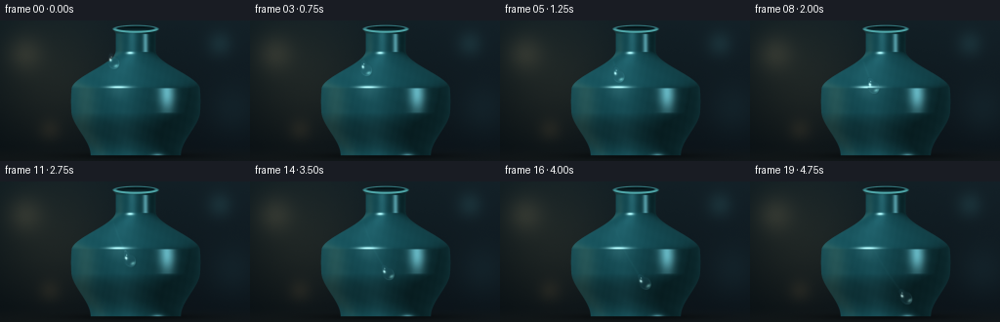
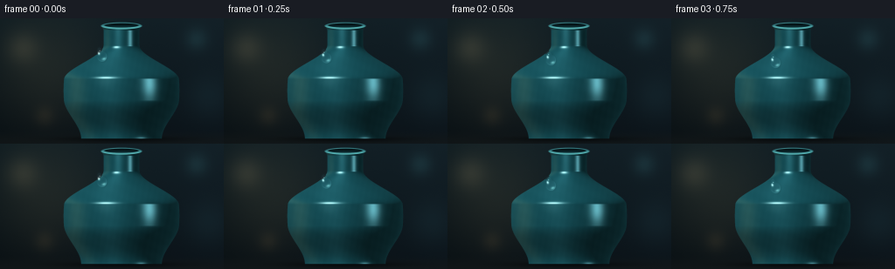

CODING AGENTS AS PIXEL WORLD MODELS
traex/GPT-5.6-Sol · phygen_039
点击播放 · 原生 RGB 像素
逐轮保存的候选
回放视频、检查图与代码变化。
每份候选均可单独播放。实际图片检查记录在下方工具轨迹中。
候选 01播放与检查图
点击播放 · 原生 RGB 像素


展开代码变化
--- 上一保存版本 +++ 本次保存版本 @@ -0,0 +1,237 @@ +from pathlib import Path +import numpy as np +import cv2 +from PIL import Image +import artifact_io + +# Deterministic procedural macro photograph of a dewdrop on glazed ceramic. +W, H, N = 256, 144, 20 +SS = 4 +w, h = W * SS, H * SS +rng = np.random.default_rng(39039) + +# Pixel centers expressed in final-frame coordinates. +Y, X = np.mgrid[0:h, 0:w].astype(np.float32) +X = (X + 0.5) / SS +Y = (Y + 0.5) / SS + + +def smoothstep(a, b, x): + t = np.clip((x-a)/(b-a), 0.0, 1.0) + return t*t*(3.0-2.0*t) + + +def vase_radius(y): + """Smooth radius profile of a hand-thrown bottle vase.""" + y = np.asarray(y, np.float32) + r = np.full_like(y, 20.6) + # Small flared lip, then long neck. + r += 2.7 * (1.0 - smoothstep(8.0, 14.0, y)) + # Rounded shoulders. + r += 43.7 * smoothstep(31.0, 70.0, y) + # Gentle belly and graceful lower taper. + r += 2.1 * np.exp(-((y-83.0)/23.0)**2) + r -= 18.0 * smoothstep(94.0, 138.0, y) + return r + +# -------------------------- fixed studio/background -------------------------- +yn = Y / H +xn = X / W +bg = np.empty((h, w, 3), np.float32) +bg[..., 0] = 8.0 + 7.5*(1-yn) + 4.0*xn +bg[..., 1] = 15.0 + 13.0*(1-yn) + 5.0*xn +bg[..., 2] = 19.0 + 14.0*(1-yn) + 7.0*xn +# Soft pool of warm studio light behind the vase. +glow = np.exp(-(((X-55.0)/74.0)**2 + ((Y-60.0)/75.0)**2)*1.35) +bg += glow[..., None] * np.array([18.0, 15.0, 9.0], np.float32) +# Defocused highlights in the distant room. +for cx, cy, rad, col, strength in [ + (26, 34, 13, (68, 55, 35), 0.33), + (225, 24, 9, (32, 70, 72), 0.25), + (238, 91, 18, (24, 50, 54), 0.18), + (51, 112, 8, (90, 64, 32), 0.16), +]: + d2 = ((X-cx)**2 + (Y-cy)**2) / (2*rad*rad) + bg += np.exp(-d2)[..., None] * np.asarray(col, np.float32) * strength +# Ground plane and contact shadow. +table = smoothstep(127.0, 143.0, Y) +bg = bg*(1-table[..., None]) + (bg*0.52 + np.array([11, 13, 13], np.float32))*table[..., None] +contact = np.exp(-((X-139.0)/65.0)**2 - ((Y-138.8)/3.0)**2) +bg *= (1.0 - 0.52*contact[..., None]) + +# ----------------------------- ceramic vase --------------------------------- +cxv = 139.0 +r = vase_radius(Y) +dx = X-cxv +vase = (Y >= 8.0) & (Y <= 138.2) & (np.abs(dx) <= r) +z = np.sqrt(np.maximum(r*r-dx*dx, 0.0)) +# Analytic normal of surface of revolution F=x^2+z^2-r(y)^2. +eps = 0.035 +rp = (vase_radius(Y+eps)-vase_radius(Y-eps))/(2*eps) +nx = dx +ny = -r*rp +nz = z +nl = np.sqrt(nx*nx+ny*ny+nz*nz)+1e-6 +nx, ny, nz = nx/nl, ny/nl, nz/nl + +# Three-area-light studio setup. +def norm3(v): + v = np.asarray(v, np.float32) + return v/np.linalg.norm(v) + +L1 = norm3((-0.54, -0.68, 0.74)) +L2 = norm3((0.78, -0.10, 0.48)) +L3 = norm3((-0.85, 0.35, 0.25)) +d1 = np.maximum(0, nx*L1[0]+ny*L1[1]+nz*L1[2]) +d2 = np.maximum(0, nx*L2[0]+ny*L2[1]+nz*L2[2]) +d3 = np.maximum(0, nx*L3[0]+ny*L3[1]+nz*L3[2]) +# View direction is +z; Blinn halfway vectors. +H1 = norm3((L1[0], L1[1], L1[2]+1.0)) +H2 = norm3((L2[0], L2[1], L2[2]+1.0)) +spec1 = np.maximum(0, nx*H1[0]+ny*H1[1]+nz*H1[2])**72 +spec2 = np.maximum(0, nx*H2[0]+ny*H2[1]+nz*H2[2])**110 +fresnel = (1.0-np.clip(nz, 0, 1))**2.7 + +# Deep turquoise glaze; diffuse response and broad vertical reflected panels. +base_col = np.array([24.0, 88.0, 98.0], np.float32) +illum = 0.22 + 0.67*d1 + 0.16*d2 + 0.09*d3 +ceramic = base_col[None,None,:] * illum[...,None] +# Cool sky reflection at the upper curve and a warm reflection on left shoulder. +sky = np.exp(-((nx+0.16)/0.20)**2) * (0.25+0.75*np.clip((80-Y)/75,0,1)) +warm = np.exp(-((nx+0.78)/0.16)**2) * np.exp(-((Y-73)/73)**2) +ceramic += sky[...,None]*np.array([18,32,34],np.float32) +ceramic += warm[...,None]*np.array([18,12,5],np.float32) +ceramic += spec1[...,None]*np.array([174,191,184],np.float32) +ceramic += spec2[...,None]*np.array([85,126,132],np.float32) +ceramic += fresnel[...,None]*np.array([9,22,24],np.float32) +# Very subtle glaze variation (fixed spatial texture, not temporal noise). +texture = (np.sin(X*0.93+Y*0.17)+np.sin(X*0.21-Y*0.47))*0.52 +ceramic += texture[...,None]*np.array([0.7,1.0,1.1],np.float32) + +base = bg.copy() +base[vase] = ceramic[vase] +# Soft antialiased silhouette by blending a narrow subpixel edge. +edge_alpha = np.clip((r-np.abs(dx))*SS + 0.55, 0, 1) * (Y>=7.7) * (Y<=138.45) +edge_alpha = cv2.GaussianBlur(edge_alpha.astype(np.float32),(0,0),0.36*SS) +base = bg*(1-edge_alpha[...,None]) + base*edge_alpha[...,None] + +# Bottle opening/lip: glazed elliptical rim and dark interior. +def ellipse_mask(cx, cy, rx, ry, feather=0.4): + q = np.sqrt(((X-cx)/rx)**2 + ((Y-cy)/ry)**2) + return np.clip((1.0-q)*min(rx,ry)/feather+0.5,0,1) + +outer = ellipse_mask(cxv, 8.65, 23.4, 4.05, 0.35) +inner = ellipse_mask(cxv, 8.20, 19.7, 2.45, 0.30) +rimcol = np.zeros_like(base) + np.array([51,119,125],np.float32) +rimcol += np.exp(-((X-(cxv-7))/6.5)**2 - ((Y-7.15)/1.0)**2)[...,None]*np.array([100,108,94]) +base = base*(1-outer[...,None]) + rimcol*outer[...,None] +inside_col = np.zeros_like(base) + np.array([4,17,20],np.float32) +inside_col += np.clip((Y-6.8)/4.0,0,1)[...,None]*np.array([13,35,38],np.float32) +base = base*(1-inner[...,None]) + inside_col*inner[...,None] +# Front lip catches a narrow highlight. +frontlip = outer*np.clip((Y-8.0)/1.8,0,1)*(1-inner) +base += frontlip[...,None]*np.array([31,52,48],np.float32) + +# Save a clean source for lens refraction. +base = np.clip(base,0,255).astype(np.float32) + +# Path follows the curved shoulder into the broad belly. +def droplet_position(t): + # Mild acceleration under gravity, no abrupt starts or stops. + p = 0.10*t + 0.90*t**1.32 + x = 116.0 + 43.0*p - 5.0*np.sin(np.pi*p) + y = 42.0 + 76.0*p + return x, y, p + +frames = [] +for fi in range(N): + t = fi/(N-1) + dcx, dcy, p = droplet_position(t) + # Current tangent: mostly gravity, drifting right along curved glaze. + dt = 0.002 + x0,y0,_ = droplet_position(max(0,t-dt)) + x1,y1,_ = droplet_position(min(1,t+dt)) + vx,vy = x1-x0,y1-y0 + vl = np.hypot(vx,vy)+1e-6 + tx,ty = vx/vl,vy/vl + # Coordinates: v along motion, u transverse. + rx = X-dcx; ry = Y-dcy + u = rx*ty-ry*tx + v = rx*tx+ry*ty + # A surface-tension bead with a slightly pinched tail and round heavy nose. + speed_shape = 1.0 + 0.13*p + q_main = (u/6.15)**2 + ((v-1.35)/(7.0*speed_shape))**2 + q_tail = (u/3.55)**2 + ((v+4.35)/(5.65*speed_shape))**2 + field = np.minimum(q_main, q_tail) + drop_alpha = np.clip((1.035-field)*4.2,0,1) + drop_alpha = cv2.GaussianBlur(drop_alpha.astype(np.float32),(0,0),0.24*SS) + + frame = base.copy() + + # Thin wet trail behind the moving drop, conforming to the body. + if fi > 0: + trail_layer = np.zeros((h,w),np.float32) + pts=[] + for s in np.linspace(0,t,90): + px,py,_=droplet_position(s) + pts.append((int(px*SS),int(py*SS))) + if len(pts)>1: + cv2.polylines(trail_layer,[np.array(pts,np.int32)],False,0.65,1*SS,cv2.LINE_AA) + # Trail is strongest just behind the bead and fades toward its origin. + fade = np.exp(-((X-dcx)**2+(Y-dcy)**2)/(2*38.0**2)) + trail_layer = cv2.GaussianBlur(trail_layer,(0,0),0.65*SS)*fade + # A damp track changes both gloss and saturation, subtly. + frame += trail_layer[...,None]*np.array([7.0,13.0,13.0],np.float32) + + # Contact shadow lies down/right under the clear bead. + shx = X-(dcx+1.25); shy = Y-(dcy+1.30) + su = shx*ty-shy*tx; sv=shx*tx+shy*ty + shadow = np.clip(1.0-((su/6.9)**2+(sv/8.9)**2),0,1)**1.7 + shadow *= vase.astype(np.float32) + frame *= (1.0-0.25*shadow[...,None]) + + # Refract/magnify the ceramic beneath the curved water lens. + # Sampling outward produces the characteristic inverted/magnified highlight. + nz_lens = np.sqrt(np.clip(1.0-np.minimum(field,1.0),0,1)) + bend = (0.16 + 0.13*(1-nz_lens))*drop_alpha + mapx = ((X + u*ty*bend + v*tx*bend)*SS-0.5).astype(np.float32) + mapy = ((Y - u*tx*bend + v*ty*bend)*SS-0.5).astype(np.float32) + refr = cv2.remap(base,mapx,mapy,cv2.INTER_LINEAR,borderMode=cv2.BORDER_REFLECT) + # Clear water transmits most of the glaze with a faint cool tint. + lens = refr*0.91 + np.array([8.0,15.0,17.0],np.float32) + # Fresnel rim: darker at top/left, bright caustic toward the lower nose. + boundary = np.exp(-((np.sqrt(np.maximum(field,0))-0.91)/0.095)**2)*drop_alpha + top_edge = boundary*np.clip((-0.20*u-0.95*v+3.5)/10.0,0,1) + low_edge = boundary*np.clip((0.18*u+0.95*v+1.0)/10.0,0,1) + lens -= top_edge[...,None]*np.array([11,17,18],np.float32) + lens += low_edge[...,None]*np.array([28,42,41],np.float32) + # Focused internal caustic at the bead's lower-right rim. + caustic = np.exp(-((u-1.25)/2.25)**2-((v-5.3*speed_shape)/1.4)**2)*drop_alpha + lens += caustic[...,None]*np.array([86,111,104],np.float32) + frame = frame*(1-(0.83*drop_alpha)[...,None]) + lens*(0.83*drop_alpha)[...,None] + + # Two crisp studio reflections make the droplet read as glistening water. + glint1 = np.exp(-((u+2.15)/1.15)**2-((v+2.55)/1.55)**2) + glint2 = np.exp(-((u+0.15)/0.55)**2-((v+4.95)/0.70)**2) + glint = np.clip(glint1*1.15+glint2*0.65,0,1)*drop_alpha + frame += glint[...,None]*np.array([151,164,157],np.float32) + # A restrained star flare twinkles as the bead crosses the key reflection. + pulse = 0.18 + 0.62*np.exp(-((p-0.43)/0.16)**2) + gx = dcx-2.1*ty-2.6*tx + gy = dcy+2.1*tx-2.6*ty + star = (np.exp(-((X-gx)/3.1)**2-((Y-gy)/0.22)**2) + + np.exp(-((X-gx)/0.22)**2-((Y-gy)/3.1)**2))*pulse + star *= np.exp(-((X-gx)**2+(Y-gy)**2)/18.0) + frame += star[...,None]*np.array([62,67,63],np.float32) + + # Fixed fine sensor grain prevents sterile gradients; downsampling makes it subtle. + grain = rng.normal(0,0.7,(h,w,1)).astype(np.float32) + frame += grain + frame = np.clip(frame,0,255).astype(np.uint8) + # High-quality area reduction to final resolution. + small = cv2.resize(frame,(W,H),interpolation=cv2.INTER_AREA) + frames.append(small) + +frames = np.stack(frames).astype(np.uint8) +assert frames.shape == (20,144,256,3) +artifact_io.save(frames, Path(__file__).resolve().parent)
可观测工具轨迹
实际执行的命令与返回图片。
命令 1exit 0
/bin/bash -lc "cat prompt.txt && printf '\\n--- GENERATION_RULES ---\\n' && cat GENERATION_RULES.md && printf '\\n--- TASK_SPEC ---\\n' && cat task_spec.json"
命令 2exit 0
/bin/bash -lc "find . -maxdepth 2 -type f -printf '%p\\n' | sort && printf '\\n--- tools ---\\n' && command -v ffmpeg || true && command -v python3 || true && python3 - <<'PY' mods=['numpy','PIL','cv2','imageio','cairo'] for m in mods: try: x=__import__(m); print(m,'OK',getattr(x,'__version__','')) except Exception as e: print(m,'NO',e) PY"
命令 3exit 0
/bin/bash -lc 'cat artifact_io.py'
命令 4exit 0
/bin/bash -lc "cat > generate.py <<'PY'
from pathlib import Path
import numpy as np
import cv2
from PIL import Image
import artifact_io
# Deterministic procedural macro photograph of a dewdrop on glazed ceramic.
W, H, N = 256, 144, 20
SS = 4
w, h = W * SS, H * SS
rng = np.random.default_rng(39039)
# Pixel centers expressed in final-frame coordinates.
Y, X = np.mgrid[0:h, 0:w].astype(np.float32)
X = (X + 0.5) / SS
Y = (Y + 0.5) / SS
def smoothstep(a, b, x):
t = np.clip((x-a)/(b-a), 0.0, 1.0)
return t*t*(3.0-2.0*t)
def vase_radius(y):
\"\"\"Smooth radius profile of a hand-thrown bottle vase.\"\"\"
y = np.asarray(y, np.float32)
r = np.full_like(y, 20.6)
# Small flared lip, then long neck.
r += 2.7 * (1.0 - smoothstep(8.0, 14.0, y))
# Rounded shoulders.
r += 43.7 * smoothstep(31.0, 70.0, y)
# Gentle belly and graceful lower taper.
r += 2.1 * np.exp(-((y-83.0)/23.0)**2)
r -= 18.0 * smoothstep(94.0, 138.0, y)
return r
# -------------------------- fixed studio/background --------------------------
yn = Y / H
xn = X / W
bg = np.empty((h, w, 3), np.float32)
bg[..., 0] = 8.0 + 7.5*(1-yn) + 4.0*xn
bg[..., 1] = 15.0 + 13.0*(1-yn) + 5.0*xn
bg[..., 2] = 19.0 + 14.0*(1-yn) + 7.0*xn
# Soft pool of warm studio light behind the vase.
glow = np.exp(-(((X-55.0)/74.0)**2 + ((Y-60.0)/75.0)**2)*1.35)
bg += glow[..., None] * np.array([18.0, 15.0, 9.0], np.float32)
# Defocused highlights in the distant room.
for cx, cy, rad, col, strength in [
(26, 34, 13, (68, 55, 35), 0.33),
(225, 24, 9, (32, 70, 72), 0.25),
(238, 91, 18, (24, 50, 54), 0.18),
(51, 112, 8, (90, 64, 32), 0.16),
]:
d2 = ((X-cx)**2 + (Y-cy)**2) / (2*rad*rad)
bg += np.exp(-d2)[..., None] * np.asarray(col, np.float32) * strength
# Ground plane and contact shadow.
table = smoothstep(127.0, 143.0, Y)
bg = bg*(1-table[..., None]) + (bg*0.52 + np.array([11, 13, 13], np.float32))*table[..., None]
contact = np.exp(-((X-139.0)/65.0)**2 - ((Y-138.8)/3.0)**2)
bg *= (1.0 - 0.52*contact[..., None])
# ----------------------------- ceramic vase ---------------------------------
cxv = 139.0
r = vase_radius(Y)
dx = X-cxv
vase = (Y >= 8.0) & (Y <= 138.2) & (np.abs(dx) <= r)
z = np.sqrt(np.maximum(r*r-dx*dx, 0.0))
# Analytic normal of surface of revolution F=x"'^2+z''^2-r(y)''^2.
eps = 0.035
rp = (vase_radius(Y+eps)-vase_radius(Y-eps))/(2*eps)
nx = dx
ny = -r*rp
nz = z
nl = np.sqrt(nx*nx+ny*ny+nz*nz)+1e-6
nx, ny, nz = nx/nl, ny/nl, nz/nl
# Three-area-light studio setup.
def norm3(v):
v = np.asarray(v, np.float32)
return v/np.linalg.norm(v)
L1 = norm3((-0.54, -0.68, 0.74))
L2 = norm3((0.78, -0.10, 0.48))
L3 = norm3((-0.85, 0.35, 0.25))
d1 = np.maximum(0, nx*L1[0]+ny*L1[1]+nz*L1[2])
d2 = np.maximum(0, nx*L2[0]+ny*L2[1]+nz*L2[2])
d3 = np.maximum(0, nx*L3[0]+ny*L3[1]+nz*L3[2])
# View direction is +z; Blinn halfway vectors.
H1 = norm3((L1[0], L1[1], L1[2]+1.0))
H2 = norm3((L2[0], L2[1], L2[2]+1.0))
spec1 = np.maximum(0, nx*H1[0]+ny*H1[1]+nz*H1[2])**72
spec2 = np.maximum(0, nx*H2[0]+ny*H2[1]+nz*H2[2])**110
fresnel = (1.0-np.clip(nz, 0, 1))**2.7
# Deep turquoise glaze; diffuse response and broad vertical reflected panels.
base_col = np.array([24.0, 88.0, 98.0], np.float32)
illum = 0.22 + 0.67*d1 + 0.16*d2 + 0.09*d3
ceramic = base_col[None,None,:] * illum[...,None]
# Cool sky reflection at the upper curve and a warm reflection on left shoulder.
sky = np.exp(-((nx+0.16)/0.20)**2) * (0.25+0.75*np.clip((80-Y)/75,0,1))
warm = np.exp(-((nx+0.78)/0.16)**2) * np.exp(-((Y-73)/73)**2)
ceramic += sky[...,None]*np.array([18,32,34],np.float32)
ceramic += warm[...,None]*np.array([18,12,5],np.float32)
ceramic += spec1[...,None]*np.array([174,191,184],np.float32)
ceramic += spec2[...,None]*np.array([85,126,132],np.float32)
ceramic += fresnel[...,None]*np.array([9,22,24],np.float32)
# Very subtle glaze variation (fixed spatial texture, not temporal noise).
texture = (np.sin(X*0.93+Y*0.17)+np.sin(X*0.21-Y*0.47))*0.52
ceramic += texture[...,None]*np.array([0.7,1.0,1.1],np.float32)
base = bg.copy()
base[vase] = ceramic[vase]
# Soft antialiased silhouette by blending a narrow subpixel edge.
edge_alpha = np.clip((r-np.abs(dx))*SS + 0.55, 0, 1) * (Y>=7.7) * (Y<=138.45)
edge_alpha = cv2.GaussianBlur(edge_alpha.astype(np.float32),(0,0),0.36*SS)
base = bg*(1-edge_alpha[...,None]) + base*edge_alpha[...,None]
# Bottle opening/lip: glazed elliptical rim and dark interior.
def ellipse_mask(cx, cy, rx, ry, feather=0.4):
q = np.sqrt(((X-cx)/rx)**2 + ((Y-cy)/ry)**2)
return np.clip((1.0-q)*min(rx,ry)/feather+0.5,0,1)
outer = ellipse_mask(cxv, 8.65, 23.4, 4.05, 0.35)
inner = ellipse_mask(cxv, 8.20, 19.7, 2.45, 0.30)
rimcol = np.zeros_like(base) + np.array([51,119,125],np.float32)
rimcol += np.exp(-((X-(cxv-7))/6.5)**2 - ((Y-7.15)/1.0)**2)[...,None]*np.array([100,108,94])
base = base*(1-outer[...,None]) + rimcol*outer[...,None]
inside_col = np.zeros_like(base) + np.array([4,17,20],np.float32)
inside_col += np.clip((Y-6.8)/4.0,0,1)[...,None]*np.array([13,35,38],np.float32)
base = base*(1-inner[...,None]) + inside_col*inner[...,None]
# Front lip catches a narrow highlight.
frontlip = outer*np.clip((Y-8.0)/1.8,0,1)*(1-inner)
base += frontlip[...,None]*np.array([31,52,48],np.float32)
# Save a clean source for lens refraction.
base = np.clip(base,0,255).astype(np.float32)
# Path follows the curved shoulder into the broad belly.
def droplet_position(t):
# Mild acceleration under gravity, no abrupt starts or stops.
p = 0.10*t + 0.90*t**1.32
x = 116.0 + 43.0*p - 5.0*np.sin(np.pi*p)
y = 42.0 + 76.0*p
return x, y, p
frames = []
for fi in range(N):
t = fi/(N-1)
dcx, dcy, p = droplet_position(t)
# Current tangent: mostly gravity, drifting right along curved glaze.
dt = 0.002
x0,y0,_ = droplet_position(max(0,t-dt))
x1,y1,_ = droplet_position(min(1,t+dt))
vx,vy = x1-x0,y1-y0
vl = np.hypot(vx,vy)+1e-6
tx,ty = vx/vl,vy/vl
# Coordinates: v along motion, u transverse.
rx = X-dcx; ry = Y-dcy
u = rx*ty-ry*tx
v = rx*tx+ry*ty
# A surface-tension bead with a slightly pinched tail and round heavy nose.
speed_shape = 1.0 + 0.13*p
q_main = (u/6.15)**2 + ((v-1.35)/(7.0*speed_shape))**2
q_tail = (u/3.55)**2 + ((v+4.35)/(5.65*speed_shape))**2
field = np.minimum(q_main, q_tail)
drop_alpha = np.clip((1.035-field)*4.2,0,1)
drop_alpha = cv2.GaussianBlur(drop_alpha.astype(np.float32),(0,0),0.24*SS)
frame = base.copy()
# Thin wet trail behind the moving drop, conforming to the body.
if fi > 0:
trail_layer = np.zeros((h,w),np.float32)
pts=[]
for s in np.linspace(0,t,90):
px,py,_=droplet_position(s)
pts.append((int(px*SS),int(py*SS)))
if len(pts)>1:
cv2.polylines(trail_layer,[np.array(pts,np.int32)],False,0.65,1*SS,cv2.LINE_AA)
# Trail is strongest just behind the bead and fades toward its origin.
fade = np.exp(-((X-dcx)**2+(Y-dcy)**2)/(2*38.0**2))
trail_layer = cv2.GaussianBlur(trail_layer,(0,0),0.65*SS)*fade
# A damp track changes both gloss and saturation, subtly.
frame += trail_layer[...,None]*np.array([7.0,13.0,13.0],np.float32)
# Contact shadow lies down/right under the clear bead.
shx = X-(dcx+1.25); shy = Y-(dcy+1.30)
su = shx*ty-shy*tx; sv=shx*tx+shy*ty
shadow = np.clip(1.0-((su/6.9)**2+(sv/8.9)**2),0,1)**1.7
shadow *= vase.astype(np.float32)
frame *= (1.0-0.25*shadow[...,None])
# Refract/magnify the ceramic beneath the curved water lens.
# Sampling outward produces the characteristic inverted/magnified highlight.
nz_lens = np.sqrt(np.clip(1.0-np.minimum(field,1.0),0,1))
bend = (0.16 + 0.13*(1-nz_lens))*drop_alpha
mapx = ((X + u*ty*bend + v*tx*bend)*SS-0.5).astype(np.float32)
mapy = ((Y - u*tx*bend + v*ty*bend)*SS-0.5).astype(np.float32)
refr = cv2.remap(base,mapx,mapy,cv2.INTER_LINEAR,borderMode=cv2.BORDER_REFLECT)
# Clear water transmits most of the glaze with a faint cool tint.
lens = refr*0.91 + np.array([8.0,15.0,17.0],np.float32)
# Fresnel rim: darker at top/left, bright caustic toward the lower nose.
boundary = np.exp(-((np.sqrt(np.maximum(field,0))-0.91)/0.095)**2)*drop_alpha
top_edge = boundary*np.clip((-0.20*u-0.95*v+3.5)/10.0,0,1)
low_edge = boundary*np.clip((0.18*u+0.95*v+1.0)/10.0,0,1)
lens -= top_edge[...,None]*np.array([11,17,18],np.float32)
lens += low_edge[...,None]*np.array([28,42,41],np.float32)
# Focused internal caustic at the bead'"'s lower-right rim.
caustic = np.exp(-((u-1.25)/2.25)**2-((v-5.3*speed_shape)/1.4)**2)*drop_alpha
lens += caustic[...,None]*np.array([86,111,104],np.float32)
frame = frame*(1-(0.83*drop_alpha)[...,None]) + lens*(0.83*drop_alpha)[...,None]
# Two crisp studio reflections make the droplet read as glistening water.
glint1 = np.exp(-((u+2.15)/1.15)**2-((v+2.55)/1.55)**2)
glint2 = np.exp(-((u+0.15)/0.55)**2-((v+4.95)/0.70)**2)
glint = np.clip(glint1*1.15+glint2*0.65,0,1)*drop_alpha
frame += glint[...,None]*np.array([151,164,157],np.float32)
# A restrained star flare twinkles as the bead crosses the key reflection.
pulse = 0.18 + 0.62*np.exp(-((p-0.43)/0.16)**2)
gx = dcx-2.1*ty-2.6*tx
gy = dcy+2.1*tx-2.6*ty
star = (np.exp(-((X-gx)/3.1)**2-((Y-gy)/0.22)**2) +
np.exp(-((X-gx)/0.22)**2-((Y-gy)/3.1)**2))*pulse
star *= np.exp(-((X-gx)**2+(Y-gy)**2)/18.0)
frame += star[...,None]*np.array([62,67,63],np.float32)
# Fixed fine sensor grain prevents sterile gradients; downsampling makes it subtle.
grain = rng.normal(0,0.7,(h,w,1)).astype(np.float32)
frame += grain
frame = np.clip(frame,0,255).astype(np.uint8)
# High-quality area reduction to final resolution.
small = cv2.resize(frame,(W,H),interpolation=cv2.INTER_AREA)
frames.append(small)
frames = np.stack(frames).astype(np.uint8)
assert frames.shape == (20,144,256,3)
artifact_io.save(frames, Path(__file__).resolve().parent)
PY
python3 generate.py
ls -lh pixels.npz inspection.png transition_check.png index.html frames/00.png frames/19.png
python3 - <<'PY'
import numpy as np
from PIL import Image
z=np.load('pixels.npz')['pixels']
print('packed',z.shape,z.dtype,'range',hex(int(z.min())),hex(int(z.max())))
a=np.stack([np.array(Image.open(f'frames/{i:02d}.png')) for i in range(20)])
print('frames',a.shape,a.dtype,'rgb range',a.min(),a.max(),'means',a.mean((0,1,2)))
print('mean abs frame deltas',[round(float(np.abs(a[i].astype(float)-a[i-1]).mean()),2) for i in range(1,20)])
PY"保存候选 1 份；完成命令 4 次；可验证图片返回 0 张。原始 API 响应与完整日志保留在本地。